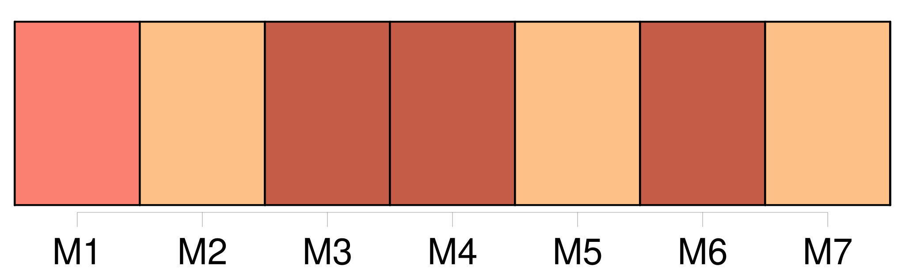
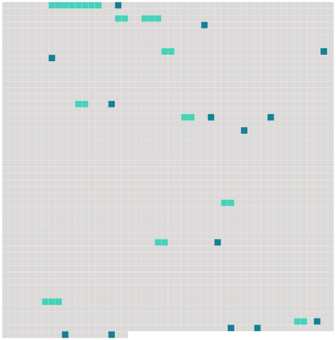

Longueur nb maillons : 24 mentions |
 |
Hector de Gribelin rencontra dans ce monde [une jeune fille noble et pauvre comme lui] , et [l'] épousa. [3 phrases]
En rapportant cet argent, il dit à [sa femme] : [1 phrases] « Ma foi, s'écria Hector, une fois n'est pas coutume ; nous louerons un break pour [toi] , les petits et la bonne, et moi je prendrai un cheval au manège. [7 phrases]
Il répétait à [sa femme] en se frottant les mains : [Tu] verras comme je monte ; et, si [tu] veux, nous reviendrons par les Champs-Elysées au moment du retour du Bois. [16 phrases]
[Sa femme] , gardant sur [ses] genoux un des enfants, et la bonne qui portait l'autre, répétaient sans cesse : [2 phrases]
Il fallut que le cocher descendit de son siège pour ramasser cette coiffure, et, quand Hector l'eut reçue de ses mains, il s'adressa de loin à [sa femme] : [3 phrases] Il m'a même un peu secoué dans les premiers moments ; mais [tu] as vu que je m'y suis vite remis : il a reconnu son maître, il ne bougera plus maintenant. [27 phrases] [Sa femme] s'élança, la bonne perdait la tête, les marmots piaillaient. [22 phrases]
[Sa femme] l'attendait dans les larmes : il [l'] apaisa. [25 phrases]
» [9 phrases]
Et, quand Hector apporta cette nouvelle à [sa femme] , [elle] se laissa choir sur une chaise en balbutiant :
»
» |
 |
Il est possible de télécharger la ressource sur la page Ortolang |
Si vous avez des questions ou vous voyez des erreurs, merci d'envoyer un mail à silvia.federzoni89@gmail.com |